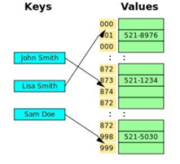
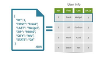
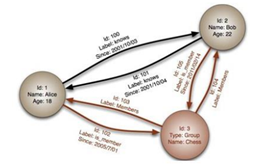

Las bases de datos NoSQL son sistemas de almacenamiento de información que no cumplen con el esquema entidad–relación. Tampoco utilizan una estructura de datos en forma de tabla donde se van almacenando los datos, sino que para el almacenamiento hacen uso de otros formatos como clave–valor, mapeo de columnas o grafos.
Esta forma de almacenar la información ofrece ciertas ventajas sobre los modelos relacionales. Entre las ventajas más significativas podemos destacar:
• Se ejecutan en máquinas con pocos recursos: Estos sistemas, a diferencia de los sistemas basados en SQL, no requieren de apenas computación, por lo que se pueden montar en máquinas de un coste más reducido.
• Escalabilidad horizontal: Para mejorar el rendimiento de estos sistemas simplemente se consigue añadiendo más nodos, con la única operación de indicar al sistema cuáles son los nodos que están disponibles.
• Pueden manejar gran cantidad de datos: Esto es debido a que utiliza una estructura distribuida, en muchos casos mediante tablas Hash.
• No genera cuellos de botella: El principal problema de los sistemas SQL es que necesitan transcribir cada sentencia para poder ser ejecutada, y cada sentencia compleja requiere además de un nivel de ejecución aún más complejo, lo que constituye un punto de entrada en común, que ante muchas peticiones puede ralentizar el sistema.
Tipos de bases de datos NoSQL
Dependiendo de la forma en la que almacenen la información, nos podemos encontrar varios tipos distintos de bases de datos NoSQL.
1.- Bases de datos clave – valor

Son el modelo de base de datos NoSQL más popular, además de ser la más sencilla en cuanto a funcionalidad. En este tipo de sistema, cada elemento está identificado por una llave única, lo que permite la recuperación de la información de forma muy rápida, información que habitualmente está almacenada como un objeto binario (BLOB). Se caracterizan por ser muy eficientes tanto para las lecturas como para las escrituras.
Algunos ejemplos de este tipo son Cassandra, BigTable o HBase.
2.- Bases de datos documentales 
Este tipo almacena la información como un documento, generalmente utilizando para ello una estructura simple como JSON o XML y donde se utiliza una clave única para cada registro. Este tipo de implementación permite, además de realizar búsquedas por clave–valor, realizar consultas más avanzadas sobre el contenido del documento.
Son las bases de datos NoSQL más versátiles. Se pueden utilizar en gran cantidad de proyectos, incluyendo muchos que tradicionalmente funcionarían sobre bases de datos relacionales.
Algunos ejemplos de este tipo son MongoDB o CouchDB.

En este tipo de bases de datos, la información se representa como nodos de un grafo y sus relaciones con las aristas del mismo, de manera que se puede hacer uso de la teoría de grafos para recorrerla. Para sacar el máximo rendimiento a este tipo de bases de datos, su estructura debe estar totalmente normalizada, de forma que cada tabla tenga una sola columna y cada relación dos.
Este tipo de bases de datos ofrece una navegación más eficiente entre relaciones que en un modelo relacional.
Algunos ejemplos de este tipo son Neo4j, InfoGrid o Virtuoso.
Bibliografia:
Tópicos Selectos de TI: Tecnologías Emergentes en el Área de Base de Datos (topicos5101jhbc.blogspot.com)
¿Qué es Base de datos en la nube? - Definición en WhatIs.com (computerweekly.com)
https://www.acens.com/wp-content/images/2014/02/bbdd-nosql-wp-acens.pdf
https://www.unir.net/ingenieria/revista/bases-datos-big-data/
https://centrogeo.repositorioinstitucional.mx/jspui/bitstream/1012/154/1/10-Geodatabase%20-%20Diplomado%20en%20An%C3%A1lisis%20de%20Informaci%C3%B3n%20Geoespacial.pdf